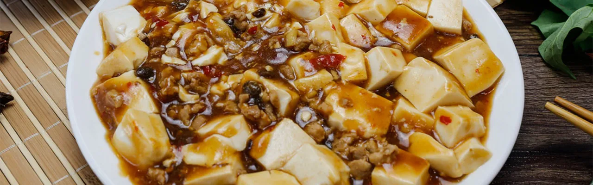

蔥爆牛肉
蔥爆牛肉具有魯菜的突出特點——以蔥香提味。 大蔥味辛，性微溫，與肉類烹煮可去腥除油膩，蔥獨特的香辣味來源於揮發硫化物蔥素，能刺激胃液和唾液分泌，增進食慾；而牛肉能夠補充人體造血所需要的鐵元素，可增強體質。
滷肉飯
依地區不同，由碎豬肉做成的肉臊飯和由三層肉做成的炕肉飯有時都被稱作「滷肉飯」，而造成混餚。在北台灣，滷肉飯指肉燥飯，在南台灣滷肉飯指的是炕肉飯。在香港的臺式餐館，「滷肉飯」大多是使用滷五花肉塊，而「魯肉飯」或「肉臊飯」才大多是使用滷肉碎。中國大陸的「台灣滷肉飯」則不作區分，使用滷肉塊或者肉臊的都可以稱為「滷肉飯」。
辦桌文化
辦桌通常是為婚喪喜慶等大事舉辦，設宴時間、地點因主辦人而異。由於辦桌在場地與布置的經費支出不多，經費主要都會展現在豐盛的菜色上。主辦人為了炒熱氣氛，也常會在活動場地搭設舞台，請表演團體到場唱歌跳舞。 台灣的辦桌起源可以追溯至清代，隨著福建、廣州的先民一起到台灣，不過當時只有富裕人家有能力辦桌。日治時期，許多餐廳、酒樓業者開始承包到府辦理宴席的服務，辦桌菜色於是融合日式飲食，生魚片便是經典的案例。隨著國民政府來台，外省菜系也在辦桌上可見，台灣辦桌菜單更加多元豐富，不只融合台式、日式、中式菜系，近年來甚至加入西式菜色。。
餐廳文化
大致有海鮮豐富、水果、醬菜入菜、節令食補等特色；傾向自然原味，調味不求繁複，「清、淡、鮮、醇」是臺灣菜烹調的重點，不論燉、炒、蒸或水煮，趨於清淡，且喜以額外的蘸料佐味。而臺灣普遍炎熱的天候也使不少帶有「酸甜味」、開胃的菜餚出現在台灣菜中。是發源於中國的料理，對東亞地區的飲食文化帶來深遠影響
傳統小吃
蚵仔煎，潮州話稱之為蠔烙，是一道以新鮮蚵仔肉裹以番薯粉煎炸而成的海鮮食品。